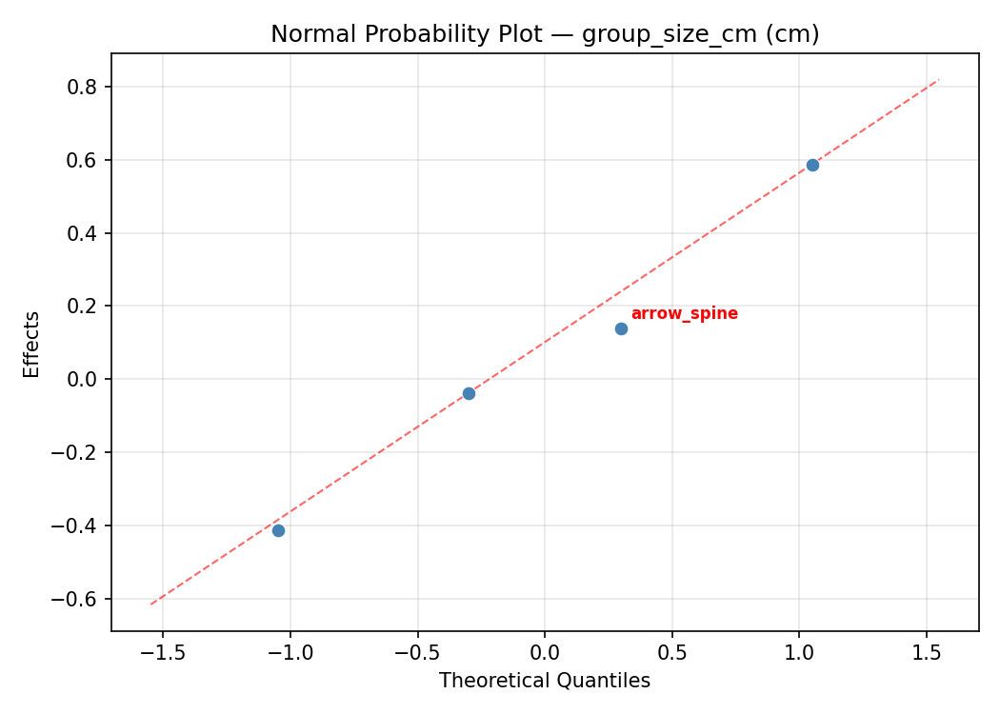
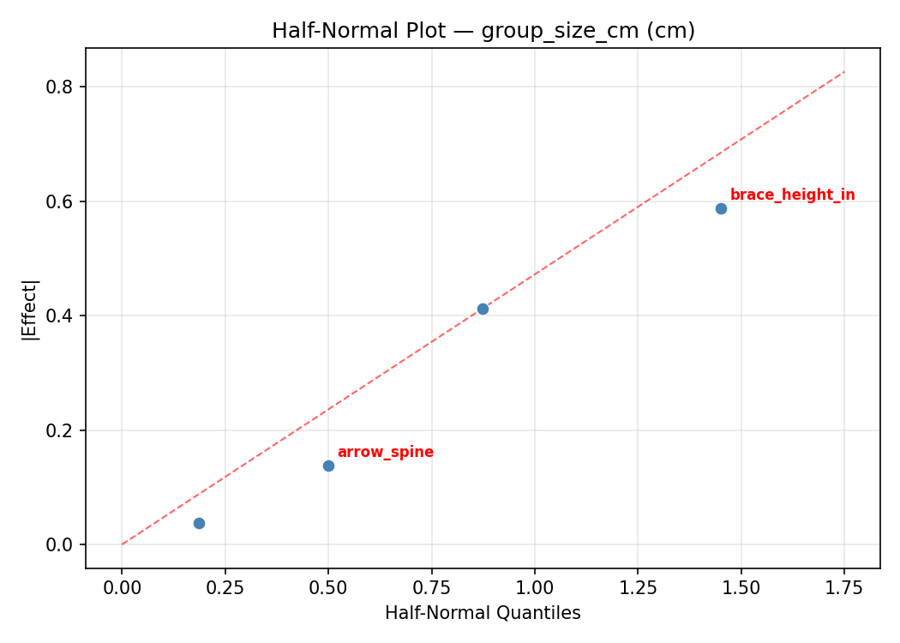
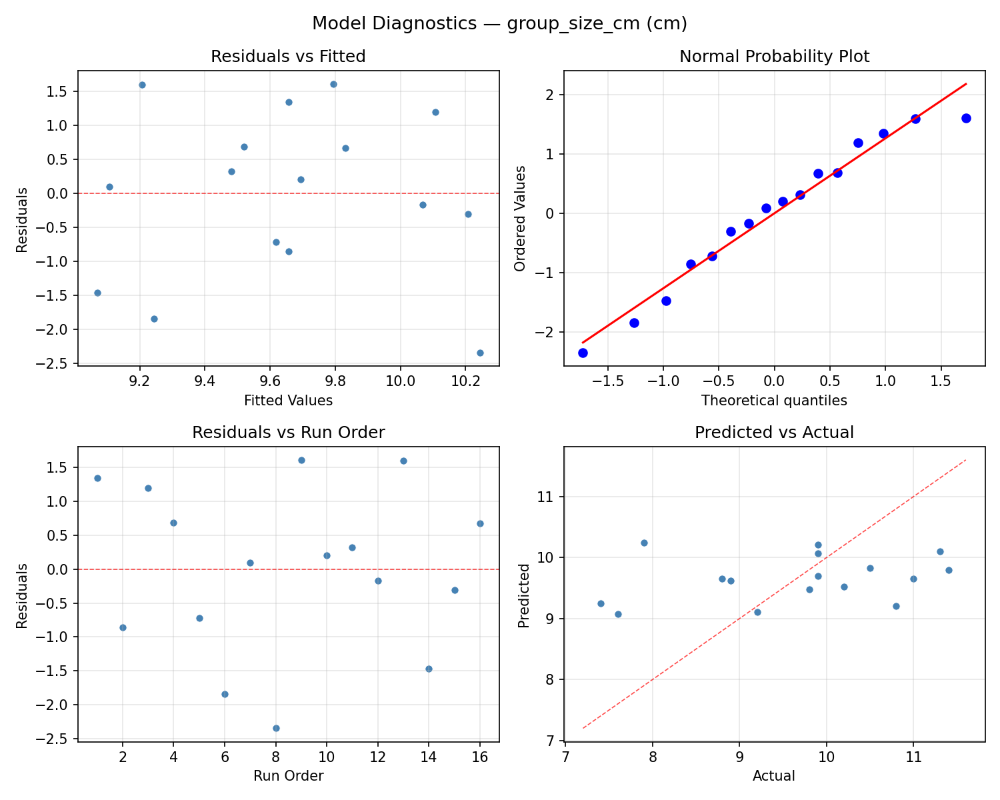
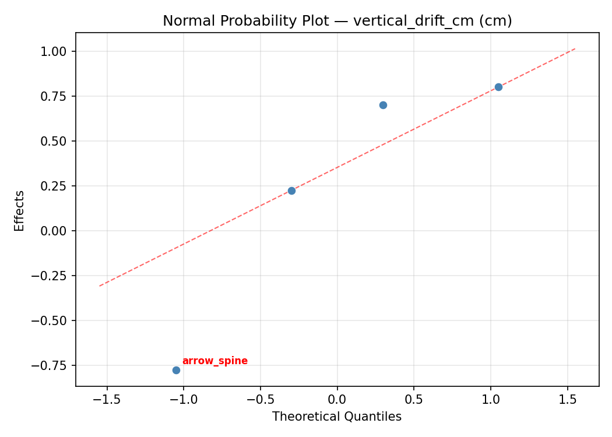
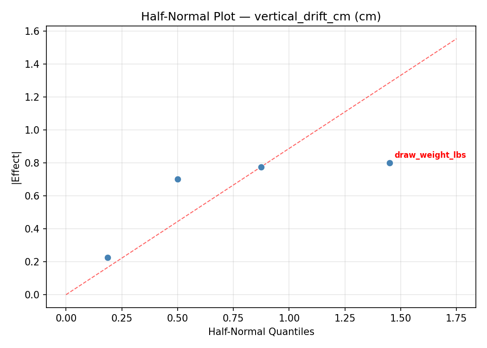
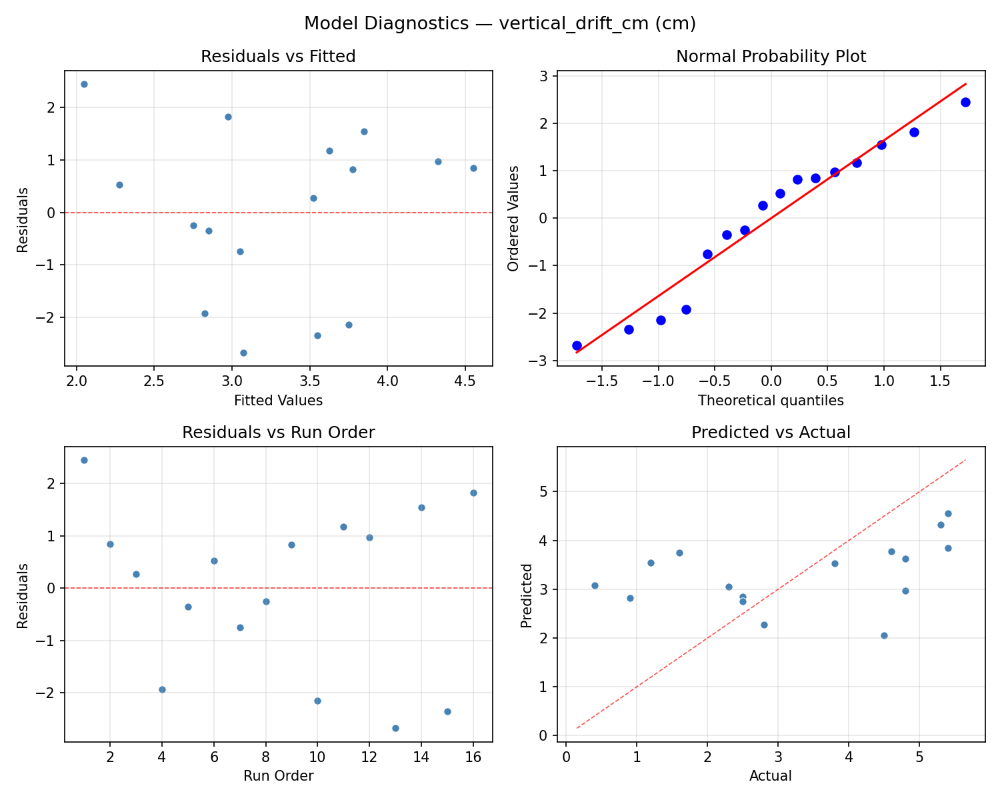

Summary
This experiment investigates archery bow tuning. Full factorial of draw weight, arrow spine, brace height, and nocking point height to maximize grouping tightness and minimize vertical drift.
The design varies 4 factors: draw weight lbs (lbs), ranging from 30 to 50, arrow spine (spine), ranging from 400 to 700, brace height in (in), ranging from 6 to 9, and nock height mm (mm), ranging from 0 to 6. The goal is to optimize 2 responses: group size cm (cm) (minimize) and vertical drift cm (cm) (minimize). Fixed conditions held constant across all runs include bow type = recurve, distance = 18m.
A full factorial design was used to explore all 16 possible combinations of the 4 factors at two levels. This guarantees that every main effect and interaction can be estimated independently, at the cost of a larger experiment (16 runs).
Quadratic response surface models were fitted to capture potential curvature and factor interactions. The RSM contour plots below visualize how pairs of factors jointly affect each response.
Key Findings
For group size cm, the most influential factors were brace height in (67.7%), nock height mm (22.6%), arrow spine (9.1%). The best observed value was 7.4 (at draw weight lbs = 30, arrow spine = 400, brace height in = 9).
For vertical drift cm, the most influential factors were arrow spine (65.5%), draw weight lbs (22.4%), brace height in (10.3%). The best observed value was 0.4 (at draw weight lbs = 50, arrow spine = 400, brace height in = 6).
Recommended Next Steps
- Consider whether any fixed factors should be varied in a future study.
Experimental Setup
Factors
| Factor | Low | High | Unit |
|---|
draw_weight_lbs | 30 | 50 | lbs |
arrow_spine | 400 | 700 | spine |
brace_height_in | 6 | 9 | in |
nock_height_mm | 0 | 6 | mm |
Fixed: bow_type = recurve, distance = 18m
Responses
| Response | Direction | Unit |
|---|
group_size_cm | ↓ minimize | cm |
vertical_drift_cm | ↓ minimize | cm |
Configuration
{
"metadata": {
"name": "Archery Bow Tuning",
"description": "Full factorial of draw weight, arrow spine, brace height, and nocking point height to maximize grouping tightness and minimize vertical drift"
},
"factors": [
{
"name": "draw_weight_lbs",
"levels": [
"30",
"50"
],
"type": "continuous",
"unit": "lbs"
},
{
"name": "arrow_spine",
"levels": [
"400",
"700"
],
"type": "continuous",
"unit": "spine"
},
{
"name": "brace_height_in",
"levels": [
"6",
"9"
],
"type": "continuous",
"unit": "in"
},
{
"name": "nock_height_mm",
"levels": [
"0",
"6"
],
"type": "continuous",
"unit": "mm"
}
],
"fixed_factors": {
"bow_type": "recurve",
"distance": "18m"
},
"responses": [
{
"name": "group_size_cm",
"optimize": "minimize",
"unit": "cm"
},
{
"name": "vertical_drift_cm",
"optimize": "minimize",
"unit": "cm"
}
],
"settings": {
"operation": "full_factorial",
"test_script": "use_cases/214_archery_bow_tuning/sim.sh"
}
}
Experimental Matrix
The Full Factorial Design produces 16 runs. Each row is one experiment with specific factor settings.
| Run | draw_weight_lbs | arrow_spine | brace_height_in | nock_height_mm |
|---|
| 1 | 30 | 700 | 9 | 6 |
| 2 | 50 | 400 | 6 | 6 |
| 3 | 30 | 700 | 6 | 6 |
| 4 | 30 | 700 | 9 | 0 |
| 5 | 50 | 700 | 9 | 0 |
| 6 | 50 | 400 | 9 | 0 |
| 7 | 50 | 700 | 6 | 0 |
| 8 | 50 | 400 | 6 | 0 |
| 9 | 30 | 400 | 6 | 6 |
| 10 | 30 | 400 | 9 | 0 |
| 11 | 50 | 700 | 6 | 6 |
| 12 | 50 | 700 | 9 | 6 |
| 13 | 30 | 700 | 6 | 0 |
| 14 | 50 | 400 | 9 | 6 |
| 15 | 30 | 400 | 6 | 0 |
| 16 | 30 | 400 | 9 | 6 |
Step-by-Step Workflow
1
Preview the design
$ python doe.py info --config use_cases/214_archery_bow_tuning/config.json
2
Generate the runner script
$ python doe.py generate --config use_cases/214_archery_bow_tuning/config.json \
--output use_cases/214_archery_bow_tuning/results/run.sh --seed 42
3
Execute the experiments
$ bash use_cases/214_archery_bow_tuning/results/run.sh
4
Analyze results
$ python doe.py analyze --config use_cases/214_archery_bow_tuning/config.json
5
Get optimization recommendations
$ python doe.py optimize --config use_cases/214_archery_bow_tuning/config.json
6
Multi-objective optimization
With 2 competing responses, use --multi to find the best compromise via Derringer–Suich desirability.
$ python doe.py optimize --config use_cases/214_archery_bow_tuning/config.json --multi
7
Generate the HTML report
$ python doe.py report --config use_cases/214_archery_bow_tuning/config.json \
--output use_cases/214_archery_bow_tuning/results/report.html
Features Exercised
| Feature | Value |
|---|
| Design type | full_factorial |
| Factor types | continuous (all 4) |
| Arg style | double-dash |
| Responses | 2 (group_size_cm ↓, vertical_drift_cm ↓) |
| Total runs | 16 |
Analysis Results
Generated from actual experiment runs using the DOE Helper Tool.
Response: group_size_cm
Top factors: brace_height_in (67.7%), nock_height_mm (22.6%), arrow_spine (9.1%).
ANOVA
| Source | DF | SS | MS | F | p-value |
|---|
| Source | DF | SS | MS | F | p-value |
| draw_weight_lbs | 1 | 0.0006 | 0.0006 | 0.000 | 0.9834 |
| arrow_spine | 1 | 0.1406 | 0.1406 | 0.108 | 0.7555 |
| brace_height_in | 1 | 7.7006 | 7.7006 | 5.925 | 0.0591 |
| nock_height_mm | 1 | 0.8556 | 0.8556 | 0.658 | 0.4540 |
| draw_weight_lbs*arrow_spine | 1 | 1.8906 | 1.8906 | 1.455 | 0.2817 |
| draw_weight_lbs*brace_height_in | 1 | 2.9756 | 2.9756 | 2.290 | 0.1907 |
| draw_weight_lbs*nock_height_mm | 1 | 0.0306 | 0.0306 | 0.024 | 0.8840 |
| arrow_spine*brace_height_in | 1 | 0.0306 | 0.0306 | 0.024 | 0.8840 |
| arrow_spine*nock_height_mm | 1 | 3.3306 | 3.3306 | 2.563 | 0.1703 |
| brace_height_in*nock_height_mm | 1 | 0.5256 | 0.5256 | 0.404 | 0.5528 |
| Error | 5 | 6.4981 | 1.2996 | | |
| Total | 15 | 23.9794 | 1.5986 | | |
Pareto Chart

Main Effects Plot

Normal Probability Plot of Effects

Half-Normal Plot of Effects

Model Diagnostics

Response: vertical_drift_cm
Top factors: arrow_spine (65.5%), draw_weight_lbs (22.4%), brace_height_in (10.3%).
ANOVA
| Source | DF | SS | MS | F | p-value |
|---|
| Source | DF | SS | MS | F | p-value |
| draw_weight_lbs | 1 | 1.6900 | 1.6900 | 0.722 | 0.4344 |
| arrow_spine | 1 | 14.4400 | 14.4400 | 6.166 | 0.0556 |
| brace_height_in | 1 | 0.3600 | 0.3600 | 0.154 | 0.7112 |
| nock_height_mm | 1 | 0.0100 | 0.0100 | 0.004 | 0.9504 |
| draw_weight_lbs*arrow_spine | 1 | 0.2500 | 0.2500 | 0.107 | 0.7571 |
| draw_weight_lbs*brace_height_in | 1 | 5.2900 | 5.2900 | 2.259 | 0.1932 |
| draw_weight_lbs*nock_height_mm | 1 | 2.8900 | 2.8900 | 1.234 | 0.3172 |
| arrow_spine*brace_height_in | 1 | 3.6100 | 3.6100 | 1.541 | 0.2695 |
| arrow_spine*nock_height_mm | 1 | 1.2100 | 1.2100 | 0.517 | 0.5045 |
| brace_height_in*nock_height_mm | 1 | 3.2400 | 3.2400 | 1.383 | 0.2925 |
| Error | 5 | 11.7100 | 2.3420 | | |
| Total | 15 | 44.7000 | 2.9800 | | |
Pareto Chart

Main Effects Plot

Normal Probability Plot of Effects

Half-Normal Plot of Effects

Model Diagnostics

Response Surface Plots
3D surfaces fitted with quadratic RSM. Red dots are observed data points.
group size cm arrow spine vs brace height in

group size cm arrow spine vs nock height mm

group size cm brace height in vs nock height mm

group size cm draw weight lbs vs arrow spine

group size cm draw weight lbs vs brace height in

group size cm draw weight lbs vs nock height mm

vertical drift cm arrow spine vs brace height in

vertical drift cm arrow spine vs nock height mm

vertical drift cm brace height in vs nock height mm

vertical drift cm draw weight lbs vs arrow spine

vertical drift cm draw weight lbs vs brace height in

vertical drift cm draw weight lbs vs nock height mm

Multi-Objective Optimization
When responses compete, Derringer–Suich desirability finds the best compromise.
Each response is scaled to a 0–1 desirability, then combined via a weighted geometric mean.
Overall Desirability
D = 0.7476
Per-Response Desirability
| Response | Weight | Desirability | Predicted | Dir |
|---|
group_size_cm |
1.5 |
|
7.40 0.9545 7.40 cm |
↓ |
vertical_drift_cm |
1.0 |
|
2.80 0.5182 2.80 cm |
↓ |
Recommended Settings
| Factor | Value |
|---|
draw_weight_lbs | 30 lbs |
arrow_spine | 400 spine |
brace_height_in | 9 in |
nock_height_mm | 6 mm |
Source: from observed run #6
Trade-off Summary
Sacrifice = how much worse than single-objective best.
| Response | Predicted | Best Observed | Sacrifice |
|---|
vertical_drift_cm | 2.80 | 0.40 | +2.40 |
Top 3 Runs by Desirability
| Run | D | Factor Settings |
|---|
| #8 | 0.7212 | draw_weight_lbs=50, arrow_spine=700, brace_height_in=9, nock_height_mm=6 |
| #5 | 0.5969 | draw_weight_lbs=30, arrow_spine=400, brace_height_in=6, nock_height_mm=0 |
Model Quality
| Response | R² | Type |
|---|
vertical_drift_cm | 0.0286 | linear |
Full Multi-Objective Output
============================================================
MULTI-OBJECTIVE OPTIMIZATION
Method: Derringer-Suich Desirability Function
============================================================
Overall desirability: D = 0.7476
Response Weight Desirability Predicted Direction
---------------------------------------------------------------------
group_size_cm 1.5 0.9545 7.40 cm ↓
vertical_drift_cm 1.0 0.5182 2.80 cm ↓
Recommended settings:
draw_weight_lbs = 30 lbs
arrow_spine = 400 spine
brace_height_in = 9 in
nock_height_mm = 6 mm
(from observed run #6)
Trade-off summary:
group_size_cm: 7.40 (best observed: 7.40, sacrifice: +0.00)
vertical_drift_cm: 2.80 (best observed: 0.40, sacrifice: +2.40)
Model quality:
group_size_cm: R² = 0.3085 (linear)
vertical_drift_cm: R² = 0.0286 (linear)
Top 3 observed runs by overall desirability:
1. Run #6 (D=0.7476): draw_weight_lbs=30, arrow_spine=400, brace_height_in=9, nock_height_mm=6
2. Run #8 (D=0.7212): draw_weight_lbs=50, arrow_spine=700, brace_height_in=9, nock_height_mm=6
3. Run #5 (D=0.5969): draw_weight_lbs=30, arrow_spine=400, brace_height_in=6, nock_height_mm=0
Full Analysis Output
=== Main Effects: group_size_cm ===
Factor Effect Std Error % Contribution
--------------------------------------------------------------
brace_height_in -1.3875 0.3161 67.7%
nock_height_mm 0.4625 0.3161 22.6%
arrow_spine -0.1875 0.3161 9.1%
draw_weight_lbs 0.0125 0.3161 0.6%
=== ANOVA Table: group_size_cm ===
Source DF SS MS F p-value
-----------------------------------------------------------------------------
draw_weight_lbs 1 0.0006 0.0006 0.000 0.9834
arrow_spine 1 0.1406 0.1406 0.108 0.7555
brace_height_in 1 7.7006 7.7006 5.925 0.0591
nock_height_mm 1 0.8556 0.8556 0.658 0.4540
draw_weight_lbs*arrow_spine 1 1.8906 1.8906 1.455 0.2817
draw_weight_lbs*brace_height_in 1 2.9756 2.9756 2.290 0.1907
draw_weight_lbs*nock_height_mm 1 0.0306 0.0306 0.024 0.8840
arrow_spine*brace_height_in 1 0.0306 0.0306 0.024 0.8840
arrow_spine*nock_height_mm 1 3.3306 3.3306 2.563 0.1703
brace_height_in*nock_height_mm 1 0.5256 0.5256 0.404 0.5528
Error 5 6.4981 1.2996
Total 15 23.9794 1.5986
=== Interaction Effects: group_size_cm ===
Factor A Factor B Interaction % Contribution
------------------------------------------------------------------------
arrow_spine nock_height_mm 0.9125 30.4%
draw_weight_lbs brace_height_in 0.8625 28.8%
draw_weight_lbs arrow_spine -0.6875 22.9%
brace_height_in nock_height_mm 0.3625 12.1%
draw_weight_lbs nock_height_mm -0.0875 2.9%
arrow_spine brace_height_in -0.0875 2.9%
=== Summary Statistics: group_size_cm ===
draw_weight_lbs:
Level N Mean Std Min Max
------------------------------------------------------------
30 8 9.6500 1.4648 7.4000 11.4000
50 8 9.6625 1.1313 7.6000 11.3000
arrow_spine:
Level N Mean Std Min Max
------------------------------------------------------------
400 8 9.7500 1.3554 7.4000 11.4000
700 8 9.5625 1.2524 7.6000 11.0000
brace_height_in:
Level N Mean Std Min Max
------------------------------------------------------------
6 8 10.3500 0.7171 9.2000 11.4000
9 8 8.9625 1.3458 7.4000 11.3000
nock_height_mm:
Level N Mean Std Min Max
------------------------------------------------------------
0 8 9.4250 1.6585 7.4000 11.4000
6 8 9.8875 0.7434 8.8000 11.0000
=== Main Effects: vertical_drift_cm ===
Factor Effect Std Error % Contribution
--------------------------------------------------------------
arrow_spine -1.9000 0.4316 65.5%
draw_weight_lbs 0.6500 0.4316 22.4%
brace_height_in -0.3000 0.4316 10.3%
nock_height_mm -0.0500 0.4316 1.7%
=== ANOVA Table: vertical_drift_cm ===
Source DF SS MS F p-value
-----------------------------------------------------------------------------
draw_weight_lbs 1 1.6900 1.6900 0.722 0.4344
arrow_spine 1 14.4400 14.4400 6.166 0.0556
brace_height_in 1 0.3600 0.3600 0.154 0.7112
nock_height_mm 1 0.0100 0.0100 0.004 0.9504
draw_weight_lbs*arrow_spine 1 0.2500 0.2500 0.107 0.7571
draw_weight_lbs*brace_height_in 1 5.2900 5.2900 2.259 0.1932
draw_weight_lbs*nock_height_mm 1 2.8900 2.8900 1.234 0.3172
arrow_spine*brace_height_in 1 3.6100 3.6100 1.541 0.2695
arrow_spine*nock_height_mm 1 1.2100 1.2100 0.517 0.5045
brace_height_in*nock_height_mm 1 3.2400 3.2400 1.383 0.2925
Error 5 11.7100 2.3420
Total 15 44.7000 2.9800
=== Interaction Effects: vertical_drift_cm ===
Factor A Factor B Interaction % Contribution
------------------------------------------------------------------------
draw_weight_lbs brace_height_in 1.1500 24.7%
arrow_spine brace_height_in 0.9500 20.4%
brace_height_in nock_height_mm -0.9000 19.4%
draw_weight_lbs nock_height_mm -0.8500 18.3%
arrow_spine nock_height_mm -0.5500 11.8%
draw_weight_lbs arrow_spine -0.2500 5.4%
=== Summary Statistics: vertical_drift_cm ===
draw_weight_lbs:
Level N Mean Std Min Max
------------------------------------------------------------
30 8 2.9750 1.7169 0.4000 5.3000
50 8 3.6250 1.7879 0.9000 5.4000
arrow_spine:
Level N Mean Std Min Max
------------------------------------------------------------
400 8 4.2500 1.1032 2.5000 5.4000
700 8 2.3500 1.7623 0.4000 5.4000
brace_height_in:
Level N Mean Std Min Max
------------------------------------------------------------
6 8 3.4500 1.9501 0.4000 5.3000
9 8 3.1500 1.5910 1.2000 5.4000
nock_height_mm:
Level N Mean Std Min Max
------------------------------------------------------------
0 8 3.3250 1.6430 0.4000 5.4000
6 8 3.2750 1.9196 0.9000 5.4000
Optimization Recommendations
=== Optimization: group_size_cm ===
Direction: minimize
Best observed run: #6
draw_weight_lbs = 30
arrow_spine = 400
brace_height_in = 9
nock_height_mm = 6
Value: 7.4
RSM Model (linear, R² = 0.4486, Adj R² = 0.2481):
Coefficients:
intercept +9.6563
draw_weight_lbs +0.5687
arrow_spine +0.3312
brace_height_in -0.3813
nock_height_mm +0.3063
RSM Model (quadratic, R² = 0.6331, Adj R² = -4.5036):
Coefficients:
intercept +1.9313
draw_weight_lbs +0.5687
arrow_spine +0.3312
brace_height_in -0.3813
nock_height_mm +0.3062
draw_weight_lbs*arrow_spine -0.0562
draw_weight_lbs*brace_height_in +0.1312
draw_weight_lbs*nock_height_mm +0.0187
arrow_spine*brace_height_in +0.0938
arrow_spine*nock_height_mm -0.4938
brace_height_in*nock_height_mm -0.0563
draw_weight_lbs^2 +1.9313
arrow_spine^2 +1.9313
brace_height_in^2 +1.9313
nock_height_mm^2 +1.9313
Curvature analysis:
draw_weight_lbs coef=+1.9313 convex (has a minimum)
arrow_spine coef=+1.9313 convex (has a minimum)
brace_height_in coef=+1.9313 convex (has a minimum)
nock_height_mm coef=+1.9313 convex (has a minimum)
Notable interactions:
arrow_spine*nock_height_mm coef=-0.4938 (antagonistic)
Predicted optimum (from linear model, at observed points):
draw_weight_lbs = 50
arrow_spine = 700
brace_height_in = 6
nock_height_mm = 6
Predicted value: 11.2438
Surface optimum (via L-BFGS-B, linear model):
draw_weight_lbs = 30
arrow_spine = 400
brace_height_in = 9
nock_height_mm = 0
Predicted value: 8.0688
Model quality: Weak fit — consider adding center points or using a different design.
Factor importance:
1. draw_weight_lbs (effect: 1.1, contribution: 35.8%)
2. brace_height_in (effect: -0.8, contribution: 24.0%)
3. arrow_spine (effect: 0.7, contribution: 20.9%)
4. nock_height_mm (effect: 0.6, contribution: 19.3%)
=== Optimization: vertical_drift_cm ===
Direction: minimize
Best observed run: #13
draw_weight_lbs = 50
arrow_spine = 400
brace_height_in = 6
nock_height_mm = 6
Value: 0.4
RSM Model (linear, R² = 0.2222, Adj R² = -0.0606):
Coefficients:
intercept +3.3000
draw_weight_lbs +0.0875
arrow_spine -0.4000
brace_height_in -0.1750
nock_height_mm -0.6500
RSM Model (quadratic, R² = 0.5579, Adj R² = -5.6309):
Coefficients:
intercept +0.6600
draw_weight_lbs +0.0875
arrow_spine -0.4000
brace_height_in -0.1750
nock_height_mm -0.6500
draw_weight_lbs*arrow_spine +0.9125
draw_weight_lbs*brace_height_in -0.2125
draw_weight_lbs*nock_height_mm -0.1375
arrow_spine*brace_height_in -0.1000
arrow_spine*nock_height_mm +0.1750
brace_height_in*nock_height_mm -0.0250
draw_weight_lbs^2 +0.6600
arrow_spine^2 +0.6600
brace_height_in^2 +0.6600
nock_height_mm^2 +0.6600
Curvature analysis:
nock_height_mm coef=+0.6600 convex (has a minimum)
draw_weight_lbs coef=+0.6600 convex (has a minimum)
arrow_spine coef=+0.6600 convex (has a minimum)
brace_height_in coef=+0.6600 convex (has a minimum)
Notable interactions:
draw_weight_lbs*arrow_spine coef=+0.9125 (synergistic)
Predicted optimum (from linear model, at observed points):
draw_weight_lbs = 50
arrow_spine = 400
brace_height_in = 6
nock_height_mm = 0
Predicted value: 4.6125
Surface optimum (via L-BFGS-B, linear model):
draw_weight_lbs = 30
arrow_spine = 700
brace_height_in = 9
nock_height_mm = 6
Predicted value: 1.9875
Model quality: Weak fit — consider adding center points or using a different design.
Factor importance:
1. nock_height_mm (effect: -1.3, contribution: 49.5%)
2. arrow_spine (effect: -0.8, contribution: 30.5%)
3. brace_height_in (effect: -0.4, contribution: 13.3%)
4. draw_weight_lbs (effect: 0.2, contribution: 6.7%)